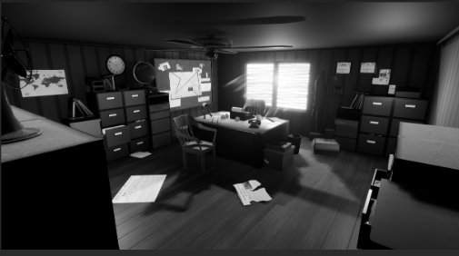

Living Room
You move into the living room thinking they could have went into this room. Nothing seems out of the ordinary from how you left it so maybe they could have gone somewhere else, or maybe you should look around more?
Where could they have gone?


